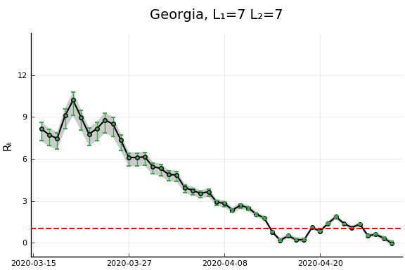
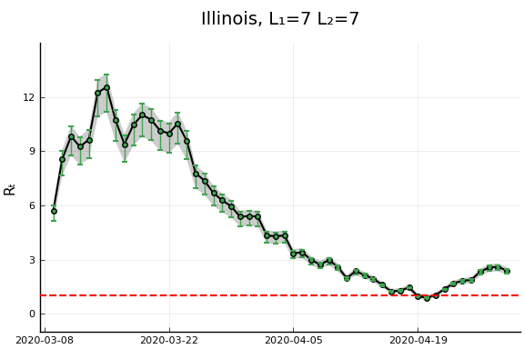
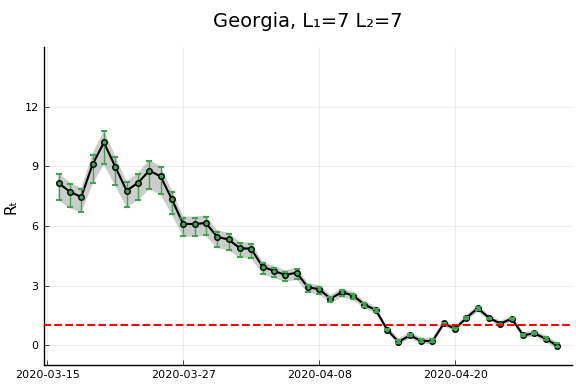
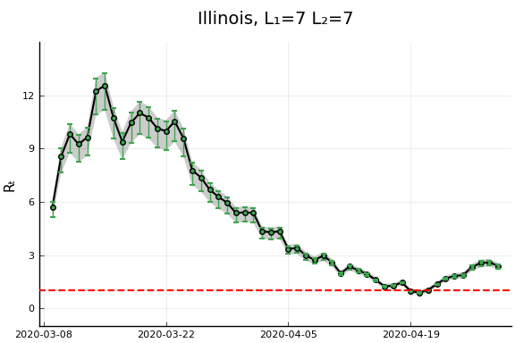

Results¶
## data prep
using CovidData
using CovidRt
Error: importing CovidRt into Main conflicts with an existing identifier
using TransformVariables, Parameters, Plots, StatsPlots, DataFrames, Dates, LinearAlgebra, Distributions, Random, LogDensityProblems, DynamicHMC, MCMCChains, JLD2, Latexify
Plots.pyplot()
df = CovidData.statedata(policies=:indicators, fillmissingmobility=true)
pvars = [Symbol("Stay.at.home..shelter.in.place"),
#Symbol("State.of.emergency"),
Symbol("Date.closed.K.12.schools"),
Symbol("Closed.gyms"),
Symbol("Closed.movie.theaters"),
Symbol("Closed.day.cares"),
Symbol("Date.banned.visitors.to.nursing.homes"),
Symbol("Closed.non.essential.businesses"),
Symbol("Closed.restaurants.except.take.out")]
mvars = [:retail_and_recreation_percent_change_from_baseline,
:grocery_and_pharmacy_percent_change_from_baseline,
:parks_percent_change_from_baseline ,
:transit_stations_percent_change_from_baseline,
:workplaces_percent_change_from_baseline,
:residential_percent_change_from_baseline,
:percentchangebusinesses]
df[!,:logpopdens] = log.(df[!,Symbol("Population.density.per.square.miles")])
df[!,:weekend] = dayofweek.(df[!,:date]) .>= 6
x0vars=[:constant, :logpopdens,
Symbol("Percent.Unemployed..2018."),
Symbol("Percent.living.under.the.federal.poverty.line..2018."),
Symbol("Percent.at.risk.for.serious.illness.due.to.COVID")]
sdf = filter(x->x.fips<60, df)
sdf = sort(sdf, (:state, :date))
sdf[!,mvars] ./= 100
sdf[!,:constant] .= 1
xvars = vcat(x0vars, mvars);
Here, we will allow the initial and time varying mean of $R_{s,t}$ to depend on covariates.
We present estimates of $R_t$ with
and
for a variety of values of $L_1$ and $L_2$
reestimate=false
rlo=-1 #1 - eps(Float64)
rhi=1.2 #1+ eps(Float64)
K = length(xvars)
priors = (γ = truncated(Normal(1/7,1/7), 1/28, 1/1),
σR0 = truncated(Normal(1, 3), 0, Inf),
α0 = MvNormal(zeros(length(x0vars)), sqrt(10)), #truncated(Normal(1, 3), 0, Inf),
σR = truncated(Normal(0.25,1),0,Inf),
σk = truncated(Normal(0.1, 5), 0, Inf),
ρ = Uniform(rlo, rhi),
α = MvNormal(zeros(K), sqrt(10))
)
states_to_plot = ["New York", "New Jersey","Massachusetts","California",
"Georgia","Illinois","Michigan",
"Ohio","Wisconsin","Washington"]
warmup = default_warmup_stages(local_optimization=nothing,
stepsize_search=nothing,
init_steps=100, middle_steps=100,
terminating_steps=2*100,
doubling_stages=4, M=Symmetric)
for L1 in [3, 7]
for L2 in [7]
mdl = CovidRt.RtModel(sdf, Symbol("cases.nyt"), xvars, x0vars,
priors; L1=L1, L2=L2,
time0=r->(r[Symbol("cases.nyt")].>=5))
estfile = "rt_onlym_$(L1)_$(L2).jld2"
if !isfile(estfile) || reestimate
post = CovidRt.mcmc(mdl; iterations=2000, warmup=warmup)
@save estfile post
end
@load estfile post
cc = CovidRt.MCMCChain(post, xvars, x0vars)
println("## L₁ = $(L1), L₂ = $(L2)")
println()
#display(plot(cc))
println(latexify(DataFrame(describe(cc)[1]), env=:mdtable, latex=false, fmt=x->round(x, sigdigits=3)))
println(latexify(DataFrame(describe(cc)[2]), env=:mdtable, latex=false, fmt=x->round(x, sigdigits=3)))
states = mdl.id
S = length(states_to_plot)
figs = fill(plot(), S)
for (i,st) in enumerate(states_to_plot)
s = findfirst(states.==st)
figr = CovidRt.plotpostr(mdl.t[s],mdl.dlogk[s],post, mdl.X[s], mdl.X0[s])
l = @layout [a{.1h}; grid(1,1)]
figs[i] = plot(plot(annotation=(0.5,0.5, st*", L₁=$(L1) L₂=$(L2)"), framestyle = :none),
plot(figr, ylim=(-1,15)), layout=l)
display(figs[i])
end
end
end
L₁ = 3, L₂ = 7¶
| parameters | mean | std | naive_se | mcse | ess | r_hat |
|---|---|---|---|---|---|---|
| γ | 0.0391 | 0.0035 | 7.83e-5 | 0.000271 | 198.0 | 1.03 |
| σR0 | 3.94 | 0.5 | 0.0112 | 0.0378 | 196.0 | 1.02 |
| α0(constant) | 1.26 | 2.83 | 0.0633 | 0.223 | 127.0 | 1.03 |
| α0(logpopdens) | -0.467 | 0.525 | 0.0117 | 0.0309 | 244.0 | 1.02 |
| α0(Percent Unemployed 2018 ) | 1.35 | 0.916 | 0.0205 | 0.0607 | 227.0 | 1.0 |
| α0(Percent living under the federal poverty line 2018 ) | -0.283 | 0.363 | 0.00812 | 0.0278 | 159.0 | 1.01 |
| α0(Percent at risk for serious illness due to COVID) | 0.152 | 0.136 | 0.00304 | 0.00973 | 131.0 | 1.02 |
| σR | 1.51 | 0.119 | 0.00266 | 0.00907 | 186.0 | 1.02 |
| σk | 0.00315 | 0.00219 | 4.9e-5 | 0.000125 | 225.0 | 1.0 |
| ρ | 0.888 | 0.00917 | 0.000205 | 0.000544 | 302.0 | 1.0 |
| α(constant) | 3.18 | 2.25 | 0.0502 | 0.219 | 151.0 | 1.0 |
| α(logpopdens) | 0.413 | 0.238 | 0.00532 | 0.0182 | 129.0 | 1.01 |
| α(Percent Unemployed 2018 ) | -0.43 | 0.4 | 0.00894 | 0.0284 | 179.0 | 1.0 |
| α(Percent living under the federal poverty line 2018 ) | 0.0713 | 0.159 | 0.00355 | 0.0103 | 179.0 | 1.0 |
| α(Percent at risk for serious illness due to COVID) | -0.0462 | 0.0729 | 0.00163 | 0.00414 | 227.0 | 1.0 |
| α(retail and recreation percent change from baseline) | 0.989 | 0.958 | 0.0214 | 0.0406 | 267.0 | 1.0 |
| α(grocery and pharmacy percent change from baseline) | 0.515 | 0.625 | 0.014 | 0.0309 | 247.0 | 1.0 |
| α(parks percent change from baseline) | -0.0779 | 0.124 | 0.00278 | 0.00847 | 226.0 | 1.01 |
| α(transit stations percent change from baseline) | -1.31 | 0.935 | 0.0209 | 0.075 | 134.0 | 1.0 |
| α(workplaces percent change from baseline) | 0.746 | 0.98 | 0.0219 | 0.0612 | 197.0 | 1.0 |
| α(residential percent change from baseline) | 0.36 | 1.69 | 0.0377 | 0.101 | 198.0 | 1.01 |
| α(percentchangebusinesses) | -0.163 | 0.835 | 0.0187 | 0.0569 | 193.0 | 1.0 |
| parameters | 2.5% | 25.0% | 50.0% | 75.0% | 97.5% |
|---|---|---|---|---|---|
| γ | 0.0358 | 0.0367 | 0.0381 | 0.0405 | 0.0478 |
| σR0 | 3.0 | 3.59 | 3.94 | 4.3 | 4.9 |
| α0(constant) | -4.24 | -0.759 | 1.32 | 3.21 | 6.79 |
| α0(logpopdens) | -1.48 | -0.823 | -0.491 | -0.0982 | 0.586 |
| α0(Percent Unemployed 2018 ) | -0.403 | 0.728 | 1.37 | 1.93 | 3.11 |
| α0(Percent living under the federal poverty line 2018 ) | -0.972 | -0.547 | -0.289 | -0.0164 | 0.42 |
| α0(Percent at risk for serious illness due to COVID) | -0.11 | 0.055 | 0.154 | 0.248 | 0.418 |
| σR | 1.23 | 1.45 | 1.54 | 1.6 | 1.66 |
| σk | 0.00011 | 0.00128 | 0.00287 | 0.00456 | 0.0079 |
| ρ | 0.87 | 0.882 | 0.887 | 0.893 | 0.907 |
| α(constant) | -1.44 | 1.74 | 3.3 | 4.68 | 7.34 |
| α(logpopdens) | -0.0671 | 0.267 | 0.408 | 0.564 | 0.916 |
| α(Percent Unemployed 2018 ) | -1.18 | -0.703 | -0.44 | -0.156 | 0.353 |
| α(Percent living under the federal poverty line 2018 ) | -0.213 | -0.0464 | 0.0671 | 0.175 | 0.388 |
| α(Percent at risk for serious illness due to COVID) | -0.193 | -0.0975 | -0.0409 | 0.00421 | 0.0876 |
| α(retail and recreation percent change from baseline) | -0.911 | 0.392 | 0.993 | 1.6 | 3.02 |
| α(grocery and pharmacy percent change from baseline) | -0.705 | 0.0593 | 0.537 | 0.97 | 1.67 |
| α(parks percent change from baseline) | -0.322 | -0.16 | -0.0765 | 0.0104 | 0.165 |
| α(transit stations percent change from baseline) | -3.34 | -1.89 | -1.29 | -0.632 | 0.479 |
| α(workplaces percent change from baseline) | -1.12 | 0.085 | 0.749 | 1.37 | 2.79 |
| α(residential percent change from baseline) | -2.88 | -0.712 | 0.378 | 1.47 | 3.72 |
| α(percentchangebusinesses) | -1.73 | -0.741 | -0.141 | 0.44 | 1.49 |
L₁ = 7, L₂ = 7¶
| parameters | mean | std | naive_se | mcse | ess | r_hat |
|---|---|---|---|---|---|---|
| γ | 0.0387 | 0.00307 | 6.87e-5 | 0.000209 | 169.0 | 1.0 |
| σR0 | 2.93 | 0.37 | 0.00828 | 0.0278 | 132.0 | 1.0 |
| α0(constant) | -0.657 | 2.86 | 0.0639 | 0.271 | 80.5 | 1.0 |
| α0(logpopdens) | -0.281 | 0.449 | 0.01 | 0.0381 | 150.0 | 1.0 |
| α0(Percent Unemployed 2018 ) | 0.576 | 0.786 | 0.0176 | 0.0754 | 118.0 | 1.0 |
| α0(Percent living under the federal poverty line 2018 ) | -0.267 | 0.324 | 0.00725 | 0.0268 | 185.0 | 1.0 |
| α0(Percent at risk for serious illness due to COVID) | 0.272 | 0.12 | 0.00268 | 0.00746 | 214.0 | 1.0 |
| σR | 0.902 | 0.0639 | 0.00143 | 0.0043 | 167.0 | 1.0 |
| σk | 0.00116 | 0.000878 | 1.96e-5 | 6.63e-5 | 189.0 | 1.01 |
| ρ | 0.94 | 0.00635 | 0.000142 | 0.000315 | 413.0 | 1.0 |
| α(constant) | 3.36 | 2.17 | 0.0485 | 0.129 | 353.0 | 1.0 |
| α(logpopdens) | 0.536 | 0.277 | 0.00619 | 0.0205 | 191.0 | 1.0 |
| α(Percent Unemployed 2018 ) | -0.381 | 0.456 | 0.0102 | 0.0358 | 163.0 | 1.0 |
| α(Percent living under the federal poverty line 2018 ) | 0.0998 | 0.185 | 0.00415 | 0.0127 | 276.0 | 1.0 |
| α(Percent at risk for serious illness due to COVID) | -0.113 | 0.0801 | 0.00179 | 0.00486 | 316.0 | 1.0 |
| α(retail and recreation percent change from baseline) | 0.497 | 0.669 | 0.015 | 0.0437 | 218.0 | 1.01 |
| α(grocery and pharmacy percent change from baseline) | -0.653 | 0.462 | 0.0103 | 0.0308 | 244.0 | 1.0 |
| α(parks percent change from baseline) | 0.0407 | 0.0844 | 0.00189 | 0.00559 | 184.0 | 1.0 |
| α(transit stations percent change from baseline) | -0.206 | 0.54 | 0.0121 | 0.0416 | 195.0 | 1.0 |
| α(workplaces percent change from baseline) | -0.032 | 0.674 | 0.0151 | 0.04 | 256.0 | 1.01 |
| α(residential percent change from baseline) | -0.16 | 1.15 | 0.0258 | 0.0584 | 352.0 | 1.0 |
| α(percentchangebusinesses) | 0.467 | 0.52 | 0.0116 | 0.0349 | 234.0 | 1.0 |
| parameters | 2.5% | 25.0% | 50.0% | 75.0% | 97.5% |
|---|---|---|---|---|---|
| γ | 0.0358 | 0.0365 | 0.0377 | 0.0398 | 0.0466 |
| σR0 | 2.24 | 2.67 | 2.91 | 3.18 | 3.64 |
| α0(constant) | -5.98 | -2.55 | -0.692 | 1.18 | 5.16 |
| α0(logpopdens) | -1.17 | -0.566 | -0.283 | -0.00723 | 0.583 |
| α0(Percent Unemployed 2018 ) | -1.15 | 0.135 | 0.623 | 1.08 | 1.94 |
| α0(Percent living under the federal poverty line 2018 ) | -0.896 | -0.497 | -0.266 | -0.0541 | 0.384 |
| α0(Percent at risk for serious illness due to COVID) | 0.0416 | 0.193 | 0.272 | 0.348 | 0.516 |
| σR | 0.745 | 0.869 | 0.917 | 0.95 | 0.978 |
| σk | 5.17e-5 | 0.000463 | 0.000962 | 0.00165 | 0.00325 |
| ρ | 0.927 | 0.935 | 0.939 | 0.944 | 0.953 |
| α(constant) | -0.783 | 1.88 | 3.35 | 4.75 | 7.81 |
| α(logpopdens) | -0.0309 | 0.353 | 0.545 | 0.729 | 1.04 |
| α(Percent Unemployed 2018 ) | -1.24 | -0.692 | -0.408 | -0.0633 | 0.505 |
| α(Percent living under the federal poverty line 2018 ) | -0.259 | -0.0252 | 0.0975 | 0.221 | 0.497 |
| α(Percent at risk for serious illness due to COVID) | -0.276 | -0.166 | -0.113 | -0.056 | 0.036 |
| α(retail and recreation percent change from baseline) | -0.844 | 0.0859 | 0.477 | 0.955 | 1.74 |
| α(grocery and pharmacy percent change from baseline) | -1.53 | -0.976 | -0.652 | -0.348 | 0.265 |
| α(parks percent change from baseline) | -0.126 | -0.0112 | 0.0407 | 0.0923 | 0.225 |
| α(transit stations percent change from baseline) | -1.26 | -0.573 | -0.2 | 0.14 | 0.886 |
| α(workplaces percent change from baseline) | -1.3 | -0.492 | -0.00572 | 0.414 | 1.34 |
| α(residential percent change from baseline) | -2.5 | -0.909 | -0.176 | 0.592 | 2.23 |
| α(percentchangebusinesses) | -0.524 | 0.106 | 0.485 | 0.815 | 1.53 |


  
 


Lagging mobility measures¶
There is expected to be some delay between infection transmission and reporting.
The incubation period (time between a person becomes infected and becomes symptomatic) is generally believed to be around 5 days. There are fewer estimates of the time between symptom onset and reporting. The few available estimates are from Italy and China. Points estimates range from 5-7 days, but confidence intervals span 1-20 days. Infections that are reported on day $t$ likely occurred between day $t-5$ and $t-20$.
There are two important implications. The first is simply a matter of interpretation. Our $R_t$ estimates are the effective reproductive number of cases reported on day $t$, which is the effective reproductive number of infections that began 5-20 days ago.
The second implication is that $R_t$ should be related to mobility measurements and policy conditions on days $t-5$ to $t-20$. One option would be to include many different lags of these variables in the model. However, this will greatly reduce statistical power and increase computation time. Instead, we will construct lagged, weighted rolling averages for use in the model. Specifically, we will use
with the assumption that the number of days between infection and reporting is $N(7,3)$ truncated to $[0,20]$.
d = truncated(Normal(7, 3), 5, 20)
ℓ = collect(5:20)
p = pdf.(d, ℓ)
p ./= sum(p)
plot(ℓ, d, title="Weights for covariates", xlab="lag", ylab="weight")

w = vcat(reverse(p), zeros(minimum(ℓ)+maximum(ℓ)))
sort!(sdf, (:state, :date))
for v in mvars
newv = Symbol(string(v)*"_lagged")
sdf[!,newv] = copy(sdf[!,v])
for gdf in groupby(sdf, :state)
gdf[:, newv] .= smooth(gdf[:,v], w=w)
end
end
mlvars = [Symbol(string(v)*"_lagged") for v in mvars]
xvars = vcat(x0vars, mlvars);
reestimate=false
rlo=-1 #1 - eps(Float64)
rhi=1.2 #1+ eps(Float64)
K = length(xvars)
priors = (γ = truncated(Normal(1/7,1/7), 1/28, 1/1),
σR0 = truncated(Normal(1, 3), 0, Inf),
α0 = MvNormal(zeros(length(x0vars)), sqrt(10)), #truncated(Normal(1, 3), 0, Inf),
σR = truncated(Normal(0.25,1),0,Inf),
σk = truncated(Normal(0.1, 5), 0, Inf),
ρ = Uniform(rlo, rhi),
α = MvNormal(zeros(K), sqrt(10))
)
states_to_plot = ["New York", "New Jersey","Massachusetts","California",
"Georgia","Illinois","Michigan",
"Ohio","Wisconsin","Washington"]
warmup = default_warmup_stages(local_optimization=nothing,
stepsize_search=nothing,
init_steps=100, middle_steps=100,
terminating_steps=2*100,
doubling_stages=4, M=Symmetric)
for L1 in [3, 7]
for L2 in [7]
mdl = CovidRt.RtModel(sdf, Symbol("cases.nyt"), xvars, x0vars,
priors; L1=L1, L2=L2,
time0=r->(r[Symbol("cases.nyt")].>=5))
estfile = "rt_mlag_$(L1)_$(L2).jld2"
if !isfile(estfile) || reestimate
post = CovidRt.mcmc(mdl; iterations=2000, warmup=warmup)
@save estfile post
end
@load estfile post
cc = CovidRt.MCMCChain(post, xvars, x0vars)
println("## L₁ = $(L1), L₂ = $(L2)")
println()
#display(plot(cc))
println(latexify(DataFrame(describe(cc)[1]), env=:mdtable, latex=false, fmt=x->round(x, sigdigits=3)))
println(latexify(DataFrame(describe(cc)[2]), env=:mdtable, latex=false, fmt=x->round(x, sigdigits=3)))
states = mdl.id
S = length(states_to_plot)
figs = fill(plot(), S)
for (i,st) in enumerate(states_to_plot)
s = findfirst(states.==st)
figr = CovidRt.plotpostr(mdl.t[s],mdl.dlogk[s],post, mdl.X[s], mdl.X0[s])
l = @layout [a{.1h}; grid(1,1)]
figs[i] = plot(plot(annotation=(0.5,0.5, st*", L₁=$(L1) L₂=$(L2)"), framestyle = :none),
plot(figr, ylim=(-1,15)), layout=l)
display(figs[i])
end
end
end
L₁ = 3, L₂ = 7¶
| parameters | mean | std | naive_se | mcse | ess | r_hat |
|---|---|---|---|---|---|---|
| γ | 0.044 | 0.00719 | 0.000161 | 0.000407 | 204.0 | 1.0 |
| σR0 | 3.61 | 0.617 | 0.0138 | 0.035 | 251.0 | 1.0 |
| α0(constant) | 0.954 | 2.91 | 0.065 | 0.107 | 667.0 | 1.0 |
| α0(logpopdens) | -0.638 | 0.544 | 0.0122 | 0.0236 | 428.0 | 1.0 |
| α0(Percent Unemployed 2018 ) | 0.725 | 0.903 | 0.0202 | 0.0474 | 359.0 | 1.0 |
| α0(Percent living under the federal poverty line 2018 ) | -0.0336 | 0.361 | 0.00807 | 0.0135 | 419.0 | 1.0 |
| α0(Percent at risk for serious illness due to COVID) | 0.0336 | 0.148 | 0.00331 | 0.00802 | 364.0 | 1.0 |
| σR | 1.34 | 0.191 | 0.00428 | 0.0108 | 205.0 | 1.0 |
| σk | 0.0022 | 0.00156 | 3.48e-5 | 5.07e-5 | 985.0 | 1.0 |
| ρ | 0.79 | 0.0128 | 0.000286 | 0.000406 | 765.0 | 1.0 |
| α(constant) | 3.65 | 1.57 | 0.0352 | 0.0898 | 332.0 | 1.0 |
| α(logpopdens) | 0.581 | 0.135 | 0.00301 | 0.00594 | 405.0 | 1.0 |
| α(Percent Unemployed 2018 ) | 0.16 | 0.189 | 0.00422 | 0.00915 | 452.0 | 1.0 |
| α(Percent living under the federal poverty line 2018 ) | -0.17 | 0.0889 | 0.00199 | 0.00484 | 387.0 | 1.0 |
| α(Percent at risk for serious illness due to COVID) | 0.031 | 0.0497 | 0.00111 | 0.00279 | 261.0 | 1.0 |
| α(retail and recreation percent change from baseline lagged) | -2.51 | 1.8 | 0.0404 | 0.081 | 444.0 | 1.0 |
| α(grocery and pharmacy percent change from baseline lagged) | 6.2 | 1.66 | 0.0371 | 0.0859 | 300.0 | 1.0 |
| α(parks percent change from baseline lagged) | -0.128 | 0.467 | 0.0104 | 0.0204 | 393.0 | 1.01 |
| α(transit stations percent change from baseline lagged) | 2.1 | 1.71 | 0.0383 | 0.0394 | 629.0 | 1.0 |
| α(workplaces percent change from baseline lagged) | 4.06 | 2.0 | 0.0446 | 0.102 | 157.0 | 1.01 |
| α(residential percent change from baseline lagged) | -1.37 | 2.96 | 0.0662 | 0.108 | 543.0 | 1.0 |
| α(percentchangebusinesses lagged) | 3.38 | 1.95 | 0.0437 | 0.069 | 575.0 | 1.0 |
| parameters | 2.5% | 25.0% | 50.0% | 75.0% | 97.5% |
|---|---|---|---|---|---|
| γ | 0.036 | 0.0384 | 0.0421 | 0.0472 | 0.0625 |
| σR0 | 2.42 | 3.16 | 3.62 | 4.04 | 4.79 |
| α0(constant) | -5.06 | -0.905 | 1.08 | 2.96 | 6.41 |
| α0(logpopdens) | -1.74 | -1.01 | -0.619 | -0.256 | 0.397 |
| α0(Percent Unemployed 2018 ) | -1.05 | 0.137 | 0.721 | 1.31 | 2.57 |
| α0(Percent living under the federal poverty line 2018 ) | -0.748 | -0.273 | -0.0373 | 0.207 | 0.698 |
| α0(Percent at risk for serious illness due to COVID) | -0.257 | -0.0658 | 0.0321 | 0.125 | 0.33 |
| σR | 0.923 | 1.22 | 1.37 | 1.5 | 1.6 |
| σk | 9.77e-5 | 0.000977 | 0.00188 | 0.00314 | 0.00578 |
| ρ | 0.766 | 0.782 | 0.79 | 0.799 | 0.816 |
| α(constant) | 0.708 | 2.57 | 3.6 | 4.67 | 6.94 |
| α(logpopdens) | 0.329 | 0.484 | 0.576 | 0.682 | 0.84 |
| α(Percent Unemployed 2018 ) | -0.199 | 0.0326 | 0.162 | 0.282 | 0.535 |
| α(Percent living under the federal poverty line 2018 ) | -0.35 | -0.222 | -0.167 | -0.112 | -0.0113 |
| α(Percent at risk for serious illness due to COVID) | -0.0602 | -0.00151 | 0.0295 | 0.0614 | 0.134 |
| α(retail and recreation percent change from baseline lagged) | -5.9 | -3.81 | -2.57 | -1.22 | 0.927 |
| α(grocery and pharmacy percent change from baseline lagged) | 2.88 | 5.12 | 6.18 | 7.28 | 9.52 |
| α(parks percent change from baseline lagged) | -1.07 | -0.433 | -0.102 | 0.154 | 0.792 |
| α(transit stations percent change from baseline lagged) | -1.07 | 1.03 | 2.05 | 3.13 | 5.71 |
| α(workplaces percent change from baseline lagged) | 0.366 | 2.66 | 4.04 | 5.37 | 8.32 |
| α(residential percent change from baseline lagged) | -7.35 | -3.25 | -1.48 | 0.569 | 4.77 |
| α(percentchangebusinesses lagged) | -0.207 | 2.12 | 3.34 | 4.6 | 7.44 |
L₁ = 7, L₂ = 7¶
| parameters | mean | std | naive_se | mcse | ess | r_hat |
|---|---|---|---|---|---|---|
| γ | 0.0405 | 0.00497 | 0.000111 | 0.000425 | 94.7 | 1.03 |
| σR0 | 2.7 | 0.395 | 0.00882 | 0.0425 | 63.1 | 1.06 |
| α0(constant) | 0.172 | 2.59 | 0.058 | 0.266 | 94.0 | 1.01 |
| α0(logpopdens) | -0.0471 | 2.2 | 0.0491 | 0.235 | 82.1 | 1.03 |
| α0(Percent Unemployed 2018 ) | 0.154 | 2.39 | 0.0535 | 0.238 | 71.7 | 1.01 |
| α0(Percent living under the federal poverty line 2018 ) | -0.72 | 1.97 | 0.0442 | 0.222 | 69.2 | 1.01 |
| α0(Percent at risk for serious illness due to COVID) | -1.76 | 0.933 | 0.0209 | 0.0791 | 133.0 | 1.01 |
| σR | 0.881 | 0.0903 | 0.00202 | 0.00811 | 83.0 | 1.04 |
| σk | 0.00153 | 0.000996 | 2.23e-5 | 0.000111 | 69.0 | 1.0 |
| ρ | 1.0 | 0.000605 | 1.35e-5 | 4.58e-5 | 154.0 | 1.0 |
| α(constant) | -0.22 | 2.71 | 0.0607 | 0.314 | 46.6 | 1.07 |
| α(logpopdens) | 0.29 | 2.28 | 0.051 | 0.255 | 60.4 | 1.03 |
| α(Percent Unemployed 2018 ) | 0.297 | 2.25 | 0.0502 | 0.192 | 93.3 | 1.01 |
| α(Percent living under the federal poverty line 2018 ) | 0.476 | 1.96 | 0.0439 | 0.229 | 60.9 | 1.01 |
| α(Percent at risk for serious illness due to COVID) | 1.97 | 0.945 | 0.0211 | 0.0833 | 126.0 | 1.01 |
| α(retail and recreation percent change from baseline lagged) | 0.217 | 1.84 | 0.0412 | 0.176 | 107.0 | 1.01 |
| α(grocery and pharmacy percent change from baseline lagged) | 2.89 | 1.38 | 0.0309 | 0.176 | 37.4 | 1.01 |
| α(parks percent change from baseline lagged) | -0.316 | 0.456 | 0.0102 | 0.0482 | 73.3 | 1.01 |
| α(transit stations percent change from baseline lagged) | 2.33 | 2.01 | 0.045 | 0.187 | 83.1 | 1.01 |
| α(workplaces percent change from baseline lagged) | 1.16 | 1.9 | 0.0424 | 0.232 | 48.4 | 1.01 |
| α(residential percent change from baseline lagged) | -0.453 | 2.81 | 0.0628 | 0.313 | 71.9 | 1.04 |
| α(percentchangebusinesses lagged) | 1.5 | 2.17 | 0.0484 | 0.25 | 29.6 | 1.02 |
| parameters | 2.5% | 25.0% | 50.0% | 75.0% | 97.5% |
|---|---|---|---|---|---|
| γ | 0.0358 | 0.037 | 0.0391 | 0.0423 | 0.0542 |
| σR0 | 1.92 | 2.44 | 2.7 | 3.0 | 3.43 |
| α0(constant) | -5.36 | -1.6 | 0.421 | 1.95 | 5.04 |
| α0(logpopdens) | -4.13 | -1.45 | -0.128 | 1.34 | 4.38 |
| α0(Percent Unemployed 2018 ) | -4.32 | -1.6 | 0.0501 | 1.86 | 5.17 |
| α0(Percent living under the federal poverty line 2018 ) | -4.8 | -2.01 | -0.726 | 0.501 | 3.14 |
| α0(Percent at risk for serious illness due to COVID) | -3.64 | -2.41 | -1.75 | -1.12 | 0.0315 |
| σR | 0.652 | 0.831 | 0.899 | 0.95 | 0.999 |
| σk | 0.000203 | 0.000712 | 0.00141 | 0.00217 | 0.00381 |
| ρ | 1.0 | 1.0 | 1.0 | 1.0 | 1.0 |
| α(constant) | -4.89 | -2.2 | -0.233 | 1.77 | 4.72 |
| α(logpopdens) | -4.2 | -1.22 | 0.399 | 1.78 | 4.43 |
| α(Percent Unemployed 2018 ) | -3.91 | -1.29 | 0.313 | 1.9 | 4.49 |
| α(Percent living under the federal poverty line 2018 ) | -3.36 | -0.842 | 0.548 | 1.75 | 4.47 |
| α(Percent at risk for serious illness due to COVID) | 0.142 | 1.32 | 1.95 | 2.63 | 3.92 |
| α(retail and recreation percent change from baseline lagged) | -3.29 | -1.1 | 0.285 | 1.47 | 3.9 |
| α(grocery and pharmacy percent change from baseline lagged) | 0.134 | 1.97 | 2.93 | 3.84 | 5.32 |
| α(parks percent change from baseline lagged) | -1.21 | -0.614 | -0.32 | 0.0126 | 0.545 |
| α(transit stations percent change from baseline lagged) | -1.81 | 1.12 | 2.35 | 3.65 | 6.28 |
| α(workplaces percent change from baseline lagged) | -2.51 | -0.0633 | 1.16 | 2.36 | 4.49 |
| α(residential percent change from baseline lagged) | -6.09 | -2.46 | -0.287 | 1.7 | 4.23 |
| α(percentchangebusinesses lagged) | -2.34 | 0.0893 | 1.4 | 2.77 | 7.26 |